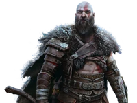

God of War Franchise
The God of War franchise has been around since 2005 however the franchise has only changed from Greek Mythology to Norse Mythology in 2018 with the gmae God Of War and its newest installment God of War Ragnarok in 2022. This follows the story of Kratos who was the Greek god of war as well as his son Atreus who in the lore of the game is Loki, God of mischief, trickery and deception. Throughout the story multiple Norse gods are fought against and some become allies. In the newest installment of the game it shows a depiction of Fimbulwinter which in Norse mythology is an endless winter before Ragnarok.
Assassins Creed Valhalla
The Assassins Creed franchise has been around since 2007 however its only since 2017 that the games have delved into mythology with the release of Assassins Creed Origins. However it was only in 2020 with the release of Assassins Creed Valhalla that the game has been associated with Norse Mythology. The game follows the story of Ivor, a viking during 880AD who is fighting against the game franchises main enemy, the templars. Throughout the game there is sections where you discover that Ivor and his family are descendants of Norse gods such as Odin, Thor, Tyr and Loki. In some parts it is possible to play as Odin and explore the games depiction of Asgrad, the home of the Aesir Gods.